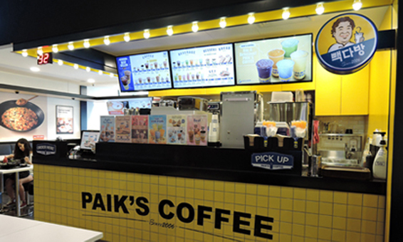
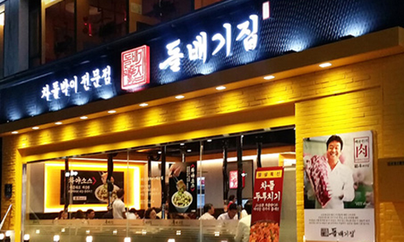

HISTORY
CEO
GLOBAL
THEBORN KOREA
HISTORY
글로벌 외식 기업
THEBORN
의 시작
20여 년간, 더본코리아는 늘 한결같은 마음으로
외식 사업의 길을 걸어왔습니다.
2017
01월
호텔더본 제주 개관
호텔더본 ‘베이커리앤’ 브랜드 런칭
호텔더본 ‘본가 프리미엄’ 브랜드 런칭
05월
‘본가’ 호주 진출
09월
‘백철판0410’ 일본 진출

2016
02월
‘백철판0410(PAIK’S PAN)’ 중국 진출
04월
야채 셋팅기구 특허등록
05월
'빽다방' 편의점 전용(CU) RTD커피 출시
'빽다방'싱가포르 진출
06월
일본 '서울키친'브랜드 런칭
‘빽다방’ 브랜드 오픈 10주년
08월
'빽다방'국내 500호점 돌파
10월
‘홍콩반점0410’ 브랜드 오픈 10주년
2015
02월
인도네시아 '본가 express' 브랜드 런칭
04월
'새마을식당' 오픈 10주년
05월
‘빽다방’ 중국 진출
08월
더본코리아 CI 변경
09월
'본가'일본 진출
12월
‘백철판0410(PAIK’S PAN)’ 말레이시아 진출
호텔더본 ‘본가 프리미엄’ 브랜드 런칭

2014
01월
'본가' 필리핀 진출, 돌솥조립체 특허등록
02월
'돌배기집' 브랜드 런칭
더본 상해 찬음 유한관리 공사 설립
05월
'원키친' 브랜드 런칭
08월
'죽채통닭' 브랜드 런칭
09월
'백철판0410'브랜드 런칭, '본가' 베트남 진출
10월
미국 '육칼밥상'브랜드 런칭
만두제조장치 및 이를 이용하여 제조된 만두 특허등록
10월
미국 '육칼밥상'브랜드 런칭
12월
더본코리아 통합공급망 관리 시스템 TTMS가동
백’s 비빔밥 일본 진출
2013
01월
'본가' 말레이시아 진출
04월
더본코리아 모바일 어플리케이션'더본쿠폰' 런칭
05월
'대한국밥' 브랜드 런칭
12월
‘백’s 비빔밥’ 싱가폴 진출
‘홍콩반점0410’ 100호점 돌파
2012
05월
2012 여수세계박람회 참가(더본푸드코트 운영)
06월
북경 국제요리대회 더본코리아 단체전 금상 수상
07월
'백's 비빔밥' 브랜드 런칭
08월
'맛기정' 단체급식 브랜드 런칭
10월
㈜더본재팬 법인 설립, 소스 제조장치 특허 등록
11월
'본가' 싱가포르 진출
12월
'새마을식당' 일본 진출
2011
05월
'역전우동0410'브랜드 런칭
08월
'본가' 인도네시아 진출
2010
02월
㈜누들제이원 법인 설립(북미 지역 프랜차이즈 회사)
'새마을식당' 100호점 돌파
2009
04월
'홍콩반점0410' 미국 진출
07월
'백's 비어' 브랜드 런칭 (舊 씨베리안 호프)
09월
'최강집', '성성식당' 브랜드 런칭
2008
01월
㈜더본아메리카 법인 설립
02월
청도 더본찬음관리 유한공사 설립 (중국 프랜차이즈 관리회사)
04월
알파갈매기살'브랜드 런칭, '절구미집'브랜드 런칭, '한국본갈비' 브랜드 런칭
07월
맛기신정 안산공장 설립 (국내 소스제조 공급회사)
11월
'미정국수0410' 브랜드 런칭
2006
02월
'사각쌈채반' 개발 및 디자인등록
06월
'빽다방' 브랜드 런칭 (舊 원조벅스)
08월
'홍콩반점0410' 브랜드 런칭
2005
03월
청도 더본식품 유한공사 설립 (중국 소스제조 공급회사)
05월
'본가' 중국 진출
09월
중국 '소본가' 브랜드 런칭
10월
'새마을식당' 브랜드 런칭
2004
09월
'해물떡찜0410' 브랜드 런칭
2002
05월
'본가' 브랜드 런칭
1998
07월
'한신포차' 브랜드 런칭 '행복분식' 브랜드 런칭
1993
04월
'대패삼겹살' 개발 및 '원조쌈밥집' 브랜드 런칭
HISTORY
CEO
GLOBAL